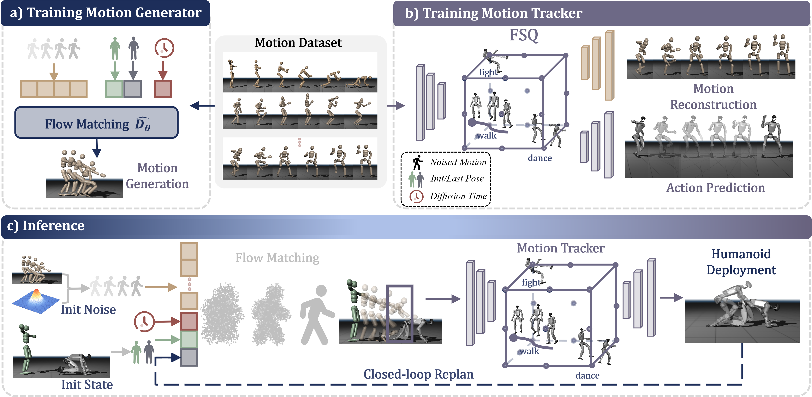

Heracles. A state-conditioned diffusion middleware that bridges precise motion tracking and generative synthesis for general-purpose humanoid control.

Overview of the Heracles framework. (a) A flow matching model learns to synthesize feasible keyframe trajectories conditioned on the current state. (b) Reference motions are quantized into discrete tokens via FSQ, shared by reconstruction and action prediction heads. (c) At inference, the middleware generates trajectories through closed-loop replanning for the motion tracker to execute. The proposed framework intrinsically decouples high-level intent generation from high-frequency physical execution, comprising two primary components: a state-conditioned generative middleware and a low-level, general-purpose physics tracking policy.
@misc{heracles2026,
title = {Heracles: Bridging Precise Tracking and Generative Synthesis for General Humanoid Control},
author = {X-Humanoid Team},
year = {2026},
eprint = {2603.27756},
archivePrefix = {arXiv},
primaryClass = {cs.RO},
url = {https://arxiv.org/abs/2603.27756}
}